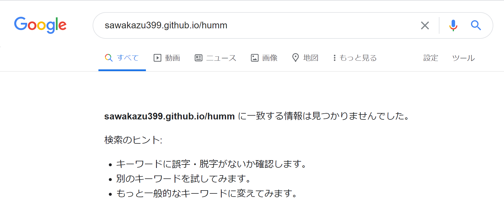

[前編]自分のホームページを検索エンジンに追加する

今回は，自分が作成したホームページをGoogleなどの検索エンジンで検索した際に表示されるようにするための準備段階として，今現在，広く使われているGoogleやYahoo!などの検索エンジンの仕組みについて書いていこうと思います。
1. 検索エンジンの仕組み

現在，主要な検索エンジンとして使われているものは上記に挙げたものと合わせ，ほかに以下のようなものが存在します。
| 検索エンジン | 概要 |
|---|---|
| 検索エンジンの中での世界的シェア率は堂々の1位. | |
| Yahoo! | 米Verizon Media社が運営.かつては自社開発の検索エンジンを利用していたが，最近では他社製エンジンを利用している。Yahoo!日本版であるYahoo! JapanはGoogleを採用. |
| Bing | 米Microsoft社が運営している検索エンジン. Windows搭載のPCにはデフォルトの検索エンジンとして設定されていることが多い. |
| NAVER(ネイバー) | 韓国最大手のインターネットサービス企業NAVERが運営.検索エンジン以外にもさまざまなサービスを提供. |
| Baidu(百度,バイドゥ) | 中国最大の検索エンジン.中国では，Googleなどの検索エンジンは利用できないため，中国国内においては高いシェアを誇っている。 |
参照:Wikipedia 他
日本十進分類法*･･･日本国内の図書館で使用されている図書分類法. 社会科学や自然科学，哲学宗教などの各分野をアラビア数字で分類しています.

↑写真:アイルランド国立ダブリン大学の図書館
これくらいの図書館で手探りで（一切の道具も使わずに）本を探すことを考えています.奇跡がない限り，無理でしょう.
2. 検索エンジンの情報源は自分自身で持つ

Google上に情報がない場合，上の写真のような検索結果が表示される.
3. クローリング: 情報を集めるために
- 検索エンジンのデータベース内にある既存のwebサイト内に貼り付けられているリンク(URL)を辿る。
- ロボットが自身のデータベース内に保存したいもの(新しい情報・更新された情報)を見つけ出す。
- 2.で見つけた情報を収集してデータベース内へ持ち寄る。
4. インデックス：データベースへ保存
5. まとめ
- 検索エンジンのデータベース内にある既存のwebサイト内に貼り付けられているリンク(URL)を辿る。
- ロボットが自身のデータベース内に保存したいもの(新しい情報・更新された情報)を見つけ出す。
- 2.で見つけた情報を収集してデータベース内へ持ち寄る。
- データベース内に保存する際，収集データの解析を行い，カテゴリ分けを行い，データベース内に保存。
- データベース内におけるwebサイトの順位付けを自動で日常的に実施